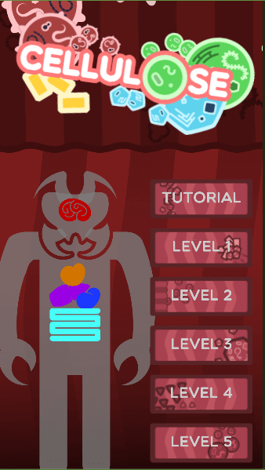
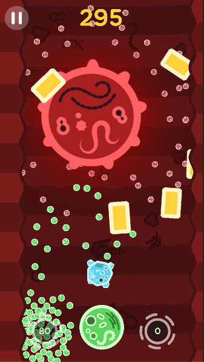
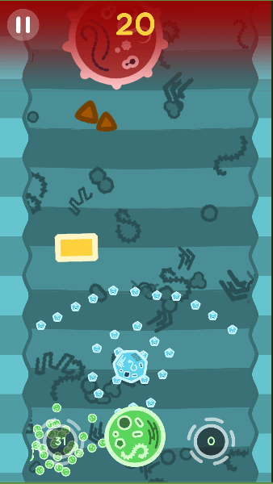

Cellulose is a mobile fast-paced RTS game. Players play the role of a commanding immune system cell, controling groups of child cells to chase after invading viruses.
Cellulose started off as a school project in a group of four. Since then, we have continued working on this post submission. I was responsible for the player child cell AI, that uses an object pool containing 100 instances of flocking-enabled finite state machines. I also programmed all player controls, user interface, main menu, gameplay logic, and level structure. For the level structure, I used a system of Scriptable Objects to store level specific information.
The game can run on medium to high end mobile devices and maintain a steady 60fps / 30fps (iOS) with reasonable battery consumption. This was achieved on top of having up to 250 cells physically and logically interacting with each other. Throughout development, we focused on performance and constantly profiled, checking for any inefficiencies that we could optimise.
The game is still in development. You can find the source of the project on our GitHub repository here: https://github.com/raynertanxw/GDP_Cellulose
You can also download the stable version of the project in Android .apk and a widnows port (as our game is single-touch, mouse controls work nicely) by clicking the respective icons below.

